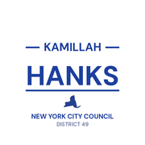
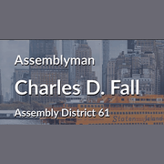
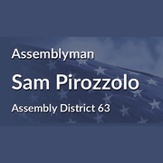
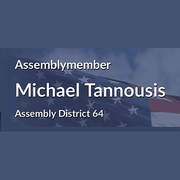

The district
 City Council
City Council State Assembly
State Assembly Congress
Congress Subway
Subway Citi Bike
Citi Bike NYC Ferry
NYC FerryTurn layers on and off. Tap an official's logo or a board's seal for its page. Zoning and land use lot by lot are on the land use map.
About
State Senator Jessica Scarcella-Spanton represents State Senate District 23. It reaches into Brooklyn and Staten Island.
The district overlaps community boards Brooklyn 13, Brooklyn 15, Staten Island 1 and Staten Island 2.
It is policed by the 60th, 61st, 120th, 121st and 122nd Precincts.
It overlaps council districts 47, 48, 49 and 50 and Assembly districts 41, 45, 46, 61, 63 and 64.
Members of the State Senate serve two year terms.
Next on the ballot in November 2026. Find your poll site and sample ballot there, or see what is coming up on the calendar.
State Senate District 23 in numbers
U.S. Census Bureau, American Community Survey 2019-2023 5-year estimates.
Committees
Contact
Overlap
Community boards


Bars show how many of the district's election districts fall in each board.
Overlapping elected officials









| Staten Island CB 1 | 52% of the senate district | 66% of it |
| Brooklyn CB 13 | 17% of the senate district | 94% of it |
| Staten Island CB 2 | 16% of the senate district | 13% of it |
| Brooklyn CB 15 | 8% of the senate district | 30% of it |
| Staten Island park/airport area | 3% of the senate district | 26% of it |
| Brooklyn CB 10 | 2% of the senate district | 9% of it |
| Brooklyn CB 11 | 1% of the senate district | 6% of it |
| 120 Precinct | 29% of the senate district | 60% of it |
| 121 Precinct | 24% of the senate district | 24% of it |
| 122 Precinct | 18% of the senate district | 18% of it |
| 60 Precinct | 17% of the senate district | 94% of it |
| 61 Precinct | 8% of the senate district | 29% of it |
| 68 Precinct | 2% of the senate district | 9% of it |
| 62 Precinct | 1% of the senate district | 6% of it |
| Sector 121A | 18% of the senate district | 99% of it |
| Sector 120D | 13% of the senate district | 100% of it |
| Sector 122C | 11% of the senate district | 33% of it |
| Sector 120A | 10% of the senate district | 93% of it |
| Sector 122B | 7% of the senate district | 35% of it |
| Sector 61D | 7% of the senate district | 67% of it |
| Sector 120B | 7% of the senate district | 98% of it |
| Sector 60B | 6% of the senate district | 84% of it |
| Sector 121B | 5% of the senate district | 41% of it |
| Sector 60D | 5% of the senate district | 100% of it |
| Sector 60C | 4% of the senate district | 100% of it |
| Sector 60A | 2% of the senate district | 100% of it |
| School District 31 | 71% of the senate district | 21% of it |
| School District 21 | 20% of the senate district | 44% of it |
| School District 22 | 7% of the senate district | 8% of it |
| School District 20 | 3% of the senate district | 5% of it |
| Council District 49 | 53% of the senate district | 76% of it |
| Council District 50 | 20% of the senate district | 14% of it |
| Council District 47 | 15% of the senate district | 47% of it |
| Council District 48 | 11% of the senate district | 47% of it |
| Council District 46 | 1% of the senate district | 2% of it |
| Assembly District 61 | 30% of the senate district | 68% of it |
| Assembly District 63 | 23% of the senate district | 20% of it |
| Assembly District 64 | 19% of the senate district | 24% of it |
| Assembly District 46 | 16% of the senate district | 59% of it |
| Assembly District 45 | 10% of the senate district | 45% of it |
| Assembly District 41 | 3% of the senate district | 15% of it |